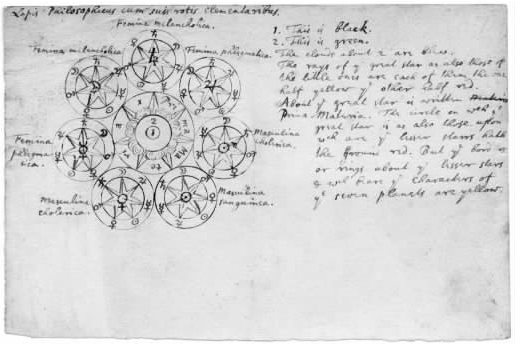

17世纪中叶，炼金术的名声可谓毁誉参半。许多人看不起炼金术，认为变贱金属为金子不过是一种毫无希望的追求。其他的人却认为炼金术有着悠久而可敬的传统，其中的秘密隐藏在晦涩难懂的文字和比喻之中，因而显得格外“高贵”而意义重大。罗伯特·波义耳等自然哲学家虽然看不起一些所谓的炼金法术，但同时相信如能进行正确的解读，一些炼金术文献实际上对自然界中最有价值的运作提出了自己的解释。就此而论，炼金术应属于一种被称为“化学”的范围更大的实践活动。化学还包括普通的或“庸俗的”化学操作，而这些操作应是每一位化学家全部技能的一部分。不过，炼金术传统则相信整个自然界都是活生生的。这一传统似乎有望解答关于发酵、发热、腐烂以及动植物与矿物生长的问题。人们认为炼金术士应该掌握了仿效发酵、发热、腐烂、生长等非凡进程的技能，运用这些技能他们就可以将各种元素进行相互转换。大多数炼金术士相信炼金术有其根本的宗教成分或灵性成分，但牛顿的炼金术论文中则显然缺少支持这一信念的证据。
17世纪50年代，以美洲人乔治·斯塔基为中心在伦敦兴起了一个炼金术士的圈子。乔治·斯塔基撰写了一些著作，发展了J.B.范·海尔蒙特的生机理论。斯塔基还分析了促使某些基本元素发酵或生长的方法。受此吸引，牛顿于17世纪60年代末开始阅读斯塔基的著作。在这段时期所记的笔记中，牛顿用从波义耳的著作中找到的术语编了一本化学词典，并记下了从事普通化学这一行业所必需的所有化学制品、操作程序和许多仪器。当时，发酵、嬗变、生命、繁殖以及精神与身体的关系等至为重大的主题深深困扰着牛顿和他的同代人。为了解答涉及这些主题的种种问题，牛顿还是转向了炼金术传统。牛顿是从什么时候开始投身炼金术研究的，其确切时间无从得知。不过，就在1669年，牛顿给他的朋友弗朗西斯·阿斯顿写了一封涉及炼金术的信，购买了两个熔炉，还一口气买进了拉扎勒斯·泽兹纳的六卷本《化学剧场》。这一切表明，他同年荣任的卢卡斯讲座教授一职可能多少影响了他对炼金术的研究兴趣。
然而，牛顿并没有忽略“普通”化学所能提供的东西。大约就在那个时候，牛顿在他的“化学”笔记本中从罗伯特·波义耳的《关于寒冷的新实验与新观察》中抄录了许多页笔记，中间加有他自己的疑问，偶尔还会提出自己的实验。《关于寒冷的新实验与新观察》出版于1665年，与波义耳在17世纪六七十年代发表的其他著作一道，形成了一座可供牛顿挖掘的再好不过的信息宝藏，提供了关于自然界的详尽而权威的信息。例如，波义耳注意到，虽然亚洲要比欧洲冷得多，但中国人并不像欧洲人那样感到寒冷，这是因为亚洲的“地下呼气”中含有“发热流”的缘故。从摘自波义耳著作的其他笔记以及牛顿对它们的思考中，我们可以看出牛顿始终感兴趣的一些自然哲学主题：热、光、嬗变以及自然的“原理”等。
在笔记本的另一处，牛顿记有一节关于“形状”嬗变的笔记，其中有这样的记录（摘自波义耳1666年发表的《形状与性质的起源》）：珊瑚、螃蟹和龙虾等生物体如从水中捞出，终会变成石头；在苏门答腊岛附近生长着一种枝条，其根却是“虫子”；而在巴西，一种类似蝗虫的动物变成了一种植物。波义耳还提供了一个关键的信息：雨水蒸馏后，会留下一种白色的土质残渣。牛顿以赞许的口吻提到范·海尔蒙特，说范·海尔蒙特认为水是万物之本，因为万物“通过连续的运作”终会“还原”为水。
提及范·海尔蒙特之后，牛顿又从乔治·斯塔基的《宣称的焰火制造术》中摘抄了一些内容。这表明牛顿当时的阅读重点已发生了变化。大约就在同一时间，牛顿也阅读了迈克尔·迈尔的《十二国炼金术士成就谈》一书。牛顿在1669年5月致阿斯顿的那封信就是以此书和一份关于旅游者忠告的手稿为基础写成的。在那封信的开头，牛顿夸夸其谈地提了一些如何对付外国人的建议。不过，牛顿也要求阿斯顿（阿斯顿即将去欧洲大陆旅行）留心一种金属嬗变为另一种金属的实例，因为这些实例“也是哲学中最有启发性且收益非凡的实验，非常值得足下的注意”。笔记本中的具体指示来自他所阅读的迈尔的著作，但与他从波义耳的著作中撷取的信息也有关联。不久以后，牛顿就开始贪婪地大量阅读炼金术著作——既有手稿也有印刷品。牛顿从许多炼金术手稿文献中摘抄了笔记，这一点非常重要，因为它表明牛顿与基于剑桥——或者更可能是伦敦的炼金术士圈子相识。不幸的是，牛顿所结交的这些炼金术士，其身份大都模糊不清。
如同对待“哲学问题”一样，牛顿很快就开始进行新颖的炼金术实验。不过，给不同的炼金术著作与术语编纂索引并比较这些著作与术语依然是他研究策略中关键的一环。购买《化学剧场》后不久，牛顿利用这部合集中引用过的文献，编了一个简短的“命题”清单。牛顿在清单中提到了一种活跃的“挥发之灵”，叫做“磁体”，说它是遍布世界万物的“独一无二的生机媒介”。这就是所谓的“哲学之汞”，即一切金属的原始形状。一旦经过炼金术士的复原，“哲学之汞”就可发挥不同反响的转变效果。“哲学之汞”通过温热发挥作用，可用来将元素复原（或“腐烂”）为它们最基本的状态，然后将它们“再生”（或“生成”）为新的形状。牛顿借用一个炼金术传统的基本比喻说，这一精元的“运作方式”因其运行领域——不论在金属上、人体中还是炼金术士的实验室里——而各有不同。“哲学之汞”能从“金属精子”中生成金子，从人的精子中生成人。

图8 牛顿所画的哲学家之石。这种物质可以帮助将贱金属转变为金子或者使人返老还童、获得永生。
大约在17世纪70年代早期，牛顿写了一篇非常出色的论文，详尽讨论了一些类似的主题。这篇论文以其首行文字——“关于大自然体现于生长中的明显法则与进程”——而为人所知，是牛顿所有论文中最重要的少数几篇之一。这篇文章讨论了嬗变、凝固以及自然乃一位永远“进行循环工作的工人”等许多主题，这些主题将在他不同领域的工作中再三出现。在像论文提纲那样进行了标号的标题之下，牛顿写道支配植物生长的那些法则同样支配着金属的发育。利用炼金术就可以将金属之中的“潜在之灵”发动起来，从而使金属开始生长。如同艺术一样，大自然只能培育自然物的各种“原型”或形式，但并不能创造它们——创造乃上帝的杰作。
牛顿认为，虽然动物界与金属界彼此有别，但它们之间也有好几个“一致”的领域。正如我们所看到的，对牛顿而言，在实验条件下培育金属的情形类似于大自然从事自己工作的方式。的确，正因为金属是活生生的东西，所以它们拥有影响动物的巨大能力——不论是裨益还是损害。这一点可从以下几方面看出：春天具有复苏万物的力量，空气中金属粒子数量及类型的变化会带来“健康或多病的年月”，还有人们注意到覆盖矿藏的土地常常是不毛之地。矿物可与动物的身体结合，成为动物身体的一部分。“如果矿物中没有一种生长素的话，它们是无法做到这一点的。”
牛顿声称，与所谓的“庸俗”化学中的变化一样，大自然的行动要么是“生长性的”（或“繁殖性的”），要么是纯“机械性的”。有时候，物体结构的变化是由其组成粒子的“机械结合或分离”引起的；但更多的时候，结构的变化是“潜在生长物质”通过更高贵的方式达成的。大自然有其“微妙、秘密而高贵的运作方式”，远远胜过我们在普通化学中发现的运作方式，而炼金术士努力模仿的正是大自然的这种运作方式。大自然繁衍行为的基础与“媒介”是位于物质核心的“种子或精子管”（其周围有一层湿润的覆盖物）。牛顿将这些“种子”称做大自然的“火”、“灵魂”与“生命”。它们只占物质“很小的一部分，而且小得令人难以想象”。但如果没有它们的激活作用，物质充其量只是一团“死土与淡水的混合物”。虽然由粗大物质组成的物体在极热条件下经常都不会受到什么影响，但是其种子的“效力”却会为超过其临界值的一点点温度升降所终止或破坏。种子发挥“效力”的核心在于生长：“成熟的”种子会作用于另一种物质不大成熟的部分，使其变得跟自身一样成熟。在这份手稿的另一部分，牛顿将物质的这种微妙成分称为“生长之灵”。万物都拥有同样的生长之灵，只不过在不同物体中，生长之灵的成熟程度或“被消化”的程度不同罢了。当成熟程度不同的生长之灵混合后，它们就会“开始发挥作用”，腐化，“深度混合，不停运作，直至达到一种次消化状态”。
这篇论文还讨论了炼金术士该如何通过仿效自然，利用生长机制来产生一些非同寻常的现象。炼金术士要做到这一点，首先必须将物质还原为一种“腐烂的混沌状态”，并且“所有腐烂的物质自身都可以生出一些东西”。虽然彻底的腐烂只会产生“一种黑色的、恶臭的腐败之物”，但适度的腐烂却能从物质中“分离”出一些东西，因而是生殖与获取营养的必要条件。如同在大自然中一样，腐烂的发生要在“温”热条件下在潮湿的物质中进行，而寒冷或过热的温度则可能阻止腐烂的发生。炼金术可以助长自然对任何东西的作用，由此得到的产物不见得就不如自然单独产生的一样“自然”。“难道身体不适的母亲生下的孩子不算自然？难道在花园中栽种和浇灌的树木不如野外独自生长的自然？”人工技术可使百年橡树进行繁殖，而将矿物“进行适当的安排，使其具有一定的湿度”，就能使矿物“腐烂变质”。
牛顿认为，金属转变为“稀薄而不稳定的烟气”后，能够渗透水（或其他液体）并“将其充满”。在冷水中，这些烟气会丧失其生长力，从而冻结为一种“稳定的”盐的状态。这时再要将它们复原成金属，那将是极其困难的事情。例如，海盐就是由各种各样的金属烟气凝结在一起而产生的一种混合物，而且其中的“盐簇”还能够结合形成长长的水晶管。烟气或蒸气的这种凝结趋势可从雨水经过蒸馏分离为不同组成成分的过程中看到，也可从水容易与矿物质结合形成岩上生长物的趋势中观察到。
将各种烟气的“不可见蒸气”混合，就可产生最“亲密”的凝结效果，从而得到“构造”更“松散而稀薄”的凝固物——比如“硝石”。牛顿将硝石称为一种“活力”，认为这种元素是“火与血……以及一切植物的酵素”。在这些蒸气稠化的过程中，能够产生硝石的湿润部分也会产生盐，但由于冰冷的海水会抑制这些更稀薄的蒸气，所以在海水中永远找不到硝石。在更稀薄的亚硝状态下，盐也会发酵腐败，但纯盐本身则是“死的”。不过，通过自然或人工的方式，可“用处于活性生长状态的其他物质”来“促使”盐的生长。碱盐可用来保存肉，这是通过盐的粗粒子实现的。但在特定的条件下，盐的“潜在素”会被引发，进而对其他元素产生“有力的”影响。处于这一状态的硝石一般被认为是火药的来源，是空气最纯部分的来源，也是最能肥沃土壤的矿物。牛顿提出，如果能让盐腐败变质，盐就会成为一种了不起的药物。
牛顿回顾了他早期的理论，描述了一个大宇宙循环体系。在这个体系中，地球向上呼出各种水汽和矿物烟气。随着空气的上升，以太被迫不断下降进入地球，“并在那里逐渐浓缩，跟遇到的物体结合，促进这些物体的活动——因为以太是一种柔嫩的酵素”。由于以太富有粘性和弹性，所以以太在下降过程中会将更重的物体带下去；而且由于以太要比空气精纯，所以以太向下带动物体的速度要比空气上升的速度快得多。这样，地球就像一个巨大的动物或“了无生气的植物”，每天吸进以太来恢复自己的活力。牛顿继续写道，地球上的元素是由以太和一种更活跃的灵混合而成的。这种灵是“大自然的普遍媒介，大自然的秘密之火，一切生长的酵素和要素”。这种灵是“一切物质的物质灵魂”，能够为温热所激活，在本质上也许是由与光同质的东西构成的。这种灵与光都具有“不可思议的活性要素”，两者都是“不断工作的工人”。所有的东西在受热后都会发出光。同阳光一样，热也是生长所不可或缺的，“没有什么物质能像光那样公平地、微妙地、迅速地渗透万物，也没有哪种灵能像这植物灵那样微妙地、尖锐地、快速地侵入物体”。这是一种非凡而丰富的宇宙哲学，其目的恰恰在于揭示生命乃至整个宇宙的活性元素。牛顿后来还会不断地以不同方式提到这些主题。
牛顿的这种具有明显炼金术色彩的宇宙哲学也以不同的形式出现在了他1675年末撰写的《假说》中。虽然这部写于1675年的作品在他有生之年并未印行出版，但其中所讨论的所有重要主题，都在18世纪早期以“疑问”的形式重新出现在不同版本的《光学》中。牛顿从事的炼金术工作显然旨在揭示普通物质中的活性元素，但他在《假说》中所描述的工作却在一定程度上涉及了针对以太的实验：用罗伯特·波义耳研究空气的那种实验式探究方法来研究以太。实际上，牛顿在1675年初在伦敦见到波义耳的时候，波义耳还就牛顿诱捕“普遍以太”的打算开过玩笑，这一点是很明显的。在同一时间，牛顿也曾就反射与折射跟胡克有过长篇累牍的讨论。牛顿认为，光的反射与折射是由光穿行其中的以太介质的边缘所起的作用引起的。他重提自己十年前的建议，告诉胡克在真空泵中做一个实验就可以证明这一点：在一个抽空了的气泵中，光的反射与折射现象将不会发生改变，从而证明造成反射与折射的是以太，而不是空气。
1675年12月初，牛顿寄给奥登伯格两篇论文。一篇是早先提过的、与有色环有关的《观测论文》。另一篇是一篇简短的论文，牛顿谦虚地称为“另一篇涂鸦小作”。从12月9日开始，这篇论文在皇家学会的每周例会上宣读，当时题为《一个解释我在几篇论文中谈及的光的性质的假说》。牛顿原先从未打算发表这类文章，但他这时却说（无疑是在影射胡克）：“我注意到一些大师们的头脑非常在意假说，就好像我的论文［缺少］一个解释它们的假说似的。”牛顿说他乐观地希望这篇文章将会终止有关他论文的种种争论。
这篇论文提出，地球上的多种现象都是由以太而非空气引起的。以太比空气更稀薄，更细微，更有“弹性”。正如空气是由空气的主体成分[与]各种“蒸气或呼气”组成的一样，以太“部分是由以太富有粘性的主体成分，部分是由其他各种‘以太精’”组成的混合物。以太能够产生像电与磁等相差甚远的现象，这足以证明以太的混合本质。牛顿推测，或许整个“大自然”都是由各种混合物构成的，而这些混合物就是由以太精或以太蒸气经沉淀浓缩而成的。大自然中的各种形状最初由上帝之手直接创造，以后则一直由自然本身的力量来控制。牛顿接着（借用他炼金术论文中的语言）写道，大自然通过“增加、繁殖”的命令，使自己“成了一位彻底仿造那位原型为她创设的东西的模仿者”。
牛顿描述了一个简单的实验，明确显示了电的本质，并再次援引了凝结的概念。在这个实验中，先用力摩擦一块圆形的、上面覆有黄铜的玻璃，不一会儿玻璃下的碎纸屑就会开始跳跃，“灵活地来回移动”。即使在摩擦停止之后，纸屑还会继续“跳跃”，朝各个方向奔腾跳蹿，有的还会在玻璃的底面短暂停留。牛顿写道，显而易见，玻璃中的某种“微妙的物质”被稀释并从玻璃中释放出来，形成了一股以太风。后来，这种物质就会凝固并返回到玻璃中去，由此产生了电引力，将纸屑吸附到玻璃的底面。
十年之前，牛顿就曾对重力的起因有过粗略的思考。现在，《假说》让他有机会公开自己对重力的可能起因的思考。重力可能是由某种非常精纯的精元持续凝固引起的。这种精元是“粘性的、胶着的、有弹性的”，类似于空气中维持生命的那部分成分。这种精元可能会在发酵或燃烧的物体中凝固，然后以重力射线的形式降入地球的空穴中，从而形成“一种娇嫩的物质，这种物质有可能就是地球的营养液汁或者原始物质，从中会长出可生育之物”。然后，地球会向上释放出一股呼气流，这股呼气流会一直上升到大气的平流层，在那里再次“稀释为其最初的［以太］要素”。牛顿又一次使用炼金术文献中的术语，说这样自然就像一位“不断进行循环工作的工人”，将液体转变为固体，将精纯的物质转变为“粗大”的物质，实际上是将一切东西转变为它们的对立面，然后又变回来。在一个更宏大的层面上，太阳也许在完全一样的现象中扮演着一个核心角色，不断吸收以太“来保证自身的照耀”，从而不让行星逃离出去。
对牛顿而言，以太能够解释地球上的大多数现象：是以太赋予发酵、腐烂、融化、反射和折射等活动以能量。更有猜测意味的是，牛顿认为以太也许还能解释“那个令人费解的问题”，即人何以能够移动自己的身体。人可以浓缩或扩展遍布于肌肉之中的以太，肌肉也就随之进行收缩和扩展。无疑，牛顿前一年春天与波义耳进行的关于诱捕以太的讨论就是以这一理论为基础的。在那次讨论中，牛顿曾建议波义耳在真空泵中进一步进行肌肉实验。虽然水是无法压缩的，但波义耳之前还是设法对一只蝌蚪进行了一定程度的挤压，由此表明蝌蚪的“动物液”和毛孔中大概带有的稀薄的以太能够被压缩（或扩展）。波义耳认为空气具有“弹性”或弹力，牛顿还对这个概念进行了修改，假定在通常的情形下，物体里面必须要有一定量的有弹力的或“有弹性的”以太，这样物体才能“承受或平衡外部以太施加的压力”。
在17世纪70年代末的某个时间，或者更可能是在17世纪80年代初的某个时候，牛顿写了一篇非常出色的论文（《论流体的重力与平衡》，现在一般称为《论重力》）。在这篇论文中，牛顿强烈批驳了笛卡儿的这一观念：物体的运动只能参照周围的物体来衡量。对我们来说，这篇文章的不同凡响之处在于牛顿认为空虚的空间实际上充满着各种潜在的形状，这些形状能够“容纳”同样大小的有形物体（但与笛卡儿所说的不同，这些形状并不等同于有形物体）。一切空间都是上帝的杰作，但并不等同于上帝。上帝能够使某些空间不可渗透或以某种方式反射光线，从而创造出可感知的物体——“神圣意志的产物是在一定量的空间中实现的”。牛顿认为这一切仅仅通过神圣思想与意愿的作用就可实现。这有点类似于我们随意移动身体的方式。牛顿总结说，如果我们能知道自己是如何随意移动身体的，“经过同样的思考我们应该也能知道上帝是如何移动物体的”。虽然上帝与人相差悬殊，但人毕竟是按照上帝的形象创造的。我们将会看到，这一理论还会出现在牛顿18世纪的主要著作中，只不过规模更为宏大而已。
挤压蝌蚪的实验有助于揭示动物是如何控制自身肌肉的，因此也许还有助于人们理解精神与身体的关系。灵魂操控肌肉运动中流体的相对密度的方式微妙而复杂，不过牛顿还是勇敢地提出了几个假设，其观点的核心是这一理论：动物体液中含有以太式的“动物灵”，但这种“动物灵”并不会从大脑、神经和肌肉外层的毛孔逃逸出去。至于其中的原因，牛顿认为动物身体的某些部分的构造或多或少倾向于收容这种灵，因为有一种“秘密的法则”，能让不同物质之间的以太具有“交际性”或“不交际性”。这一法则会让动物灵待在身体的某些部分中，而不待在其他的部分。这一理论还可解释太阳涡旋与行星涡旋保持分离状态的原因。牛顿提出，就空气粒子而言，我们可以引入某种第三元素，使得原先“不交际”的物质变得彼此交际起来。那么，难道灵魂就不能以同样的方法与以太发生互动吗？灵魂也可以引入一种不同的以太，使肌肉中的动物灵与它们的包裹层彼此交际或者停止交际。
牛顿在《假说》中称光既不是以太本身，也不是以太的振动性运动，而是从透明体中流出的“某种东西”，但他没明说这种东西究竟是什么。这一观点与胡克在其《显微术》中描述的理论直接对立。牛顿认为在最开始，某种“运动法则”让光加速运行，从而脱离了透明体。不过，他还是不愿说明这是由“机械”原因引起的，还是通过某种其他途径——也许是某种类似于上帝植入动物体内的那种自动法则——而实现的。
牛顿接着说，光与以太能够互相作用，以太会折射光，而光会作用于以太，进而产生热。光也能使以太产生振动，让振动从一个更大的物体中倾泻而过，就像击打一对鼓能使空气产生振动一样。振动空气可以产生声音，以此类比，人对各种颜色的体验也可能是由视觉神经的毛细纤维 中产生的振动引起的。最强的振动会产生最强烈的颜色。牛顿甚至提议，可以按照将声音“定成”不同音调的方法来分析光。就是在这篇论文中，牛顿（在一位朋友所画线条的基础上）再次使用了八度音的类比，首次公开提出可将光谱分为七种颜色。最后，牛顿试图解释同心环纹何以出现在薄膜中，还有衍射是如何出现的。衍射的问题在1675年春皇家学会的一次会议上引起了争论。在那次会议上，胡克提出了衍射的话题，牛顿宣称衍射只不过是一种折射，而胡克则断言如果衍射是一种折射的话，那它肯定是一种非常新颖的折射。但在《假说》一文中，牛顿则指出他在阅读中发现，早在胡克之前，格里马尔迪就曾做过衍射实验。
提交《假说》一周之后，牛顿给皇家学会去了一封信，在信中又描述了一些可以用玻璃与纸屑来做的有关电的实验。这触发了一股试图重复这些实验的热潮；在此后四十年中，这些对电现象的即席观测实验都长盛不衰，由此可见牛顿影响的深远和创意的新颖。不过，牛顿当时更为关注的是他与胡克愈演愈烈的关于光学现象的争论。12月16日，在皇家学会宣读《假说》第二部分的时候，胡克站起来说牛顿的大部分假说在他的《显微术》中都可以找到，牛顿只不过“在某些具体方面”将其深化了而已。牛顿听说此事后，立马向这位格雷欣学院 [7] 的教授连本带息地回敬了两大赞语——缺乏创意，涉嫌剽窃。牛顿称胡克在《显微术》中有关以太引起光学现象的解释与笛卡儿“和其他人”著作中的解释没有什么两样；胡克从人家那里“借用了”许多学说，只不过他将借来的理论应用于薄膜现象和有色体的研究，稍稍拓展了一下罢了。
牛顿继续说，除了在以太振动这一大体概念上一致之外，他与胡克没有多少共同之处。胡克假定光等同于振动的以太，而他并不这样认为。他对折射和反射的解释、对自然物何以产生各种颜色的解释都和胡克的解释相差甚远。实际上，他的薄膜实验“摧毁了胡克关于光与色的一切论述”。牛顿的这封信在12月30日举行的皇家学会会议上宣读了。毋庸置疑，胡克对牛顿和奥登伯格感到非常恼火。两天后，胡克便成立了一个“哲学俱乐部”（其中包括克里斯托弗·雷恩等他的支持者）。在这个俱乐部中，他再次指控牛顿，称牛顿实际上从他的《显微术》中拿走了大批的材料和理论。
1676年1月20日，皇家学会宣读了牛顿的另一封来信。随后，胡克匆忙给牛顿写了一封和解信，在信中指责奥登伯格在他俩之间挑唆。胡克知道牛顿想听什么，所以在信中辩称他非常讨厌通过印刷物来进行辩论和争斗，并郑重说明他非常看重牛顿“卓越的专题论文”。胡克声称他很高兴看到牛顿“支持并改进”那些他很早就想到但由于缺乏时间而未能完成的想法。这一说法像信中的其他评论一样，也是一把双刃剑。不过，虽然胡克在信中还说了一些类似的评论，但他对牛顿的能力的确赞誉有加，说牛顿的能力远胜于他。在信的结尾，胡克说他很愿意和牛顿进行私人通信，如果可以的话，他愿通过个人信件来提出他的一些异议。
正是在此背景下，牛顿写了他那封著名的回信，在信中说如果他曾看得远一些，那是因为他站在巨人肩上的缘故。他告诉胡克，私人通信更像磋商，他非常欢迎，因为“在众目睽睽下所做的事情除了探询真理之外，很少有不带别的考虑的”。牛顿抛开他致奥登伯格的信函中强调的重点，转而称赞胡克的工作超越了笛卡儿，说胡克可能做过一些他本人尚未做过的实验。信的最后一句话可以有两种解读。他们两人交流中所用的许多措辞都有这个特点。如果说牛顿和胡克此后多少有了一些和解的话，这种和解也仅仅持续了四年的时间。
与胡克的这个尴尬事件结束后几个月，牛顿写信给奥登伯格，谈论波义耳新近匿名发表的一封关于“炼金术之汞”的信。该信说将汞与金混合在一起，汞就能加热并溶化金。牛顿怀疑这种汞有可能通过“粗大”的金属粒子对金子产生了作用，因而在医学操作或炼金术操作中可能毫无用处。牛顿还说，波义耳不再就该主题发表文章，实乃明智之举。的确，“如果炼金术士的著作中真有什么真理的话，如果我们想避免对世界产生大的损害的话，不进行传达”也许“能将人们领向某种更高贵的东西”。波义耳应该采纳“一位真正的炼金术哲学家”的忠告，因为一位真正的炼金术哲学家的判断要比任何人的都珍贵——“（如果那些大骗子所言不虚的话，）除了他们声称只有他们才掌握的金属嬗变之外，还有其他的东西”。后来，牛顿还批评波义耳过于公开，“沽名钓誉”。这一评论无疑在一定程度上与上述事件有关。
1679年2月，牛顿给波义耳去信，谈及他俩早些时候关于“物理性质”概念的讨论。那次讨论很可能就是在他1675年春前去拜访波义耳时进行的。这封信无疑取材于他的炼金术研究，虽然也涉及他在1675年的《假说》中表达过的更传统的哲学观点（而且在许多地方都是对这些观点的总结）。牛顿告诉波义耳整个大气中都弥漫着一种有弹性的以太，并重复他在《假说》中的评论，说这种以太可以解释许多普遍的现象。他再次援引自己的“交际性”理论来解释为什么有的金属需要经过一种“合适媒介”的处理，才能与水或其他金属进行混合。信的其他部分则来自他的炼金术研究。牛顿告诉波义耳，想想地球的内部如何通过持续发酵产生了空气物质，那么认为大气中最持久的部分是金属的想法也就不那么荒唐了。最恒久的那部分大气是“真正的空气”，因为包含较重的金属粒子，所以它刚好处于地面之上、更轻的蒸气之下。不过，它并不是空气中能够赐予生命的那部分，“如果没有漂浮其中的那部分更柔嫩的蒸发物和精气，它就不能给生物提供任何养分”。在信的最后一段，牛顿援引他的以太理论，洋洋洒洒地对重力进行了解释。
在其职业生涯的大部分时间，牛顿都执著于他的以太假说和炼金术活动，只不过大都是在私下进行的。在17世纪70年代末和17世纪80年代初，牛顿孜孜不倦地进行了一系列炼金术实验。1687年春，他一完成《原理》的编撰工作，就立马又投入到炼金术研究上来。他在这方面的工作大都是组织和评估不同的文献，不过在17世纪90年代早期，牛顿又突如其来地进行了一系列密集的实验活动，其时他的朋友法蒂奥·德·杜伊连尔担任他和伦敦一些炼金术士之间的联系人。17世纪90年代后期，牛顿移居伦敦，之后他活跃的实验活动似乎逐渐消失了，但他依然致力于研究炼金术传统中的一些核心主题，而且依然坚持炼金术的基本见解——大自然中充斥着一种微妙而强大的活动。
偶尔，牛顿也会将他的炼金术活动向别人透露一点儿。1680年末，牛顿正在进行一系列长时间的炼金术实验，这时剑桥大学基督学院的托马斯·伯内特前去拜会牛顿这位剑桥最出色的自然哲学家，向牛顿请教上帝有可能是怎样通过自然途径创造地球的。伯内特1681年出版了《关于地球的神圣理论》。到17世纪90年代，此书开始流行起来，成为第一本流行开来的物理神学类著作，不过那时该书的基础已改为牛顿《数学原理》中的哲学了。
牛顿告诉伯内特，山岳与海洋的创造最初可能是由太阳的热量引起的，或者是由地球涡旋与月球涡旋压迫原始水域而导致的。地球会朝赤道方向蜷缩，使赤道地区“更加凹陷”，从而使海洋的水聚集到那里。此外，创始的头几天持续的时间应该要比现代时期长得多，这样才能给予创始的进程以足够的时间，使其变得接近世界今天的样子。为了理解原始的混沌状态是如何分化为山岭与空穴的，牛顿又转向他那篇关于“金属的生长”的论文中所作的分析。在那篇论文中，牛顿指出固体常常是在溶解中生成的。例如，硝酸钠会溶解于水，进而结晶为长长的盐条。除此之外，地上混沌的其他部分在太阳的热量下会干涸收缩，从而形成一些隧道，让水下降到地下，也让像间歇泉和矿井中的“烟气”那样的“地下蒸气”从地下深处升出来。
在一篇关于《圣经》诠释的重要文章中，牛顿也批评了伯内特关于应该如何理解摩西的创世描述的论述。摩西说上帝在第四天创造了两个光体（即太阳和月球）和星星，但我们不应认为这一描述暗示这些天体实际上就是在那一天被创造的，而且摩西描述的也不是这些天体的物理实在，“它们中有一些要比这个地球大得多，而且也许是可居住的世界，说它们是光体仅仅因为它们是这个地球的光源而已”。摩西说光是第一天被创造的，牛顿对此也采用了类似的诠释办法。虽然摩西为了适应无知大众的感知能力而“调整了”自己的语言，但并不能因此就说他的描述是假的。牛顿说摩西关于创始的叙述不是“哲学上的或伪造的”，而是真真确确的 ——“摩西的任务并非是纠正哲学事务中的世俗观念”，而是“尽可能优雅地提出一种适应世俗之人的感觉与能力的创世描述”。
除了在致伯内特的信中有所暗示外，牛顿还在1693年初致理查德·本特利的一封信中指出，其他世界的存在并不是不合情理的。牛顿的“哲学问题”笔记本也显示，早在学生时代，牛顿已经有了大火灾之后会出现“一系列连续世界”的极端想法。在1694年，牛顿告诉戴维·格雷戈里，彗星具有一种神圣的功能，而木星的卫星是造世主留下以备新的创世之用的。
在生命快走到终点的时候，牛顿跟约翰·孔杜伊特有过一次非常特别的谈话。牛顿告诉孔杜伊特，太阳发出的光与其他物质曾经结合形成一颗卫星，这颗卫星通过吸收其他物质进一步形成了一颗行星。最后，这颗行星成了一颗彗星，而这颗彗星为了获得补给，到时将会重新落入太阳。他还说这颗彗星有可能就是1680年出现的那颗大彗星。这颗大彗星在不算太久的将来会撞入太阳。一旦发生此事，这颗彗星将会急剧增加太阳的热量，甚至会将“这个地球烧焦，地球上将没有动物能够存活”。这似乎能够解释1572年和1604年出现的超行星现象。这一切可能将在接受上帝指导的更高级的“智能存在”的监督下进行。牛顿继续说人类在这个星球上的存在是有限的，并暗示神圣力量可能会向这个星球“重新赋予人类”。听了这话之后，孔杜伊特指着《原理》中牛顿提到彗星补给恒星的一段话，问牛顿为什么没有明确说明这对我们的太阳系有着怎样的含义。显而易见，世界末日的话题在那时显得很有趣，所以牛顿以少有的诙谐语调说，那个话题“与我们关系更大，并笑着补充说他已经说得够多了，人们应该能够知道他的意思”。